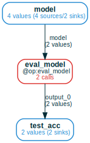

Query the Storage with ComputationFrames

Why ComputationFrames?
The ComputationFrame data structure formalizes the natural/intuitive way you
think of the "web" of saved @op calls. It gives you a "grammar" in which
operations over persisted computation graphs that are easy to think of are also
easy to implement.
In computational projects, all queries boil down to how some variables depend on
other variables: e.g., in ML you often care about what input parameters lead to
final results with certain metrics. The mandala storage can automatically
answer such questions when all operations along the way were @ops, because it
represents the "web" of saved @op calls, linked by how the outputs of one
@op are used as inputs to other @ops.
The ComputationFrame (CF) is the data structure used to explore and query this
web of calls. It's a high-level view of a collection of @op calls, so that
calls that serve the same role are grouped together. The groups of calls form a
computational graph of variables and functions, which enables effective &
natural high-level operations over storage.
This section covers basic tools to get up to speed with CFs. For more advanced
usage, see Advanced ComputationFrame tools
Typical workflow
Using CFs typically goes through the following stages:
- creation: initialize a CF in various ways,
e.g. from some
Refs, from all calls to an@op, .... This CF will have a limited view of storage because it will involve few (0 or 1)@ops - expansion: add more context to the CF by adding new function nodes containing the calls that produced/used some variable(s). The goal of this stage is to incorporate in the CF all variables whose relationships you're interested in.
- combination & restriction: merge multiple CFs, restrict to subgraphs or specific values of the variables along some predicates. This lets you focus on the computations you want before making expensive calls to the storage.
- conversion to a
pandas.DataFrame: finally, extract a table representing the relationships between the variables in the CF for downstream analysis.
Toy ML pipeline
In this section, we'll work with the following toy experiment on a small ML pipeline:
# for Google Colab
try:
import google.colab
!pip install git+https://github.com/amakelov/mandala
except:
pass
### define ops to train & eval a random forest model on digits dataset
import numpy as np
from sklearn.datasets import load_digits
from sklearn.model_selection import train_test_split
from sklearn.ensemble import RandomForestClassifier
from mandala.imports import *
try:
import rich
from rich import print as pprint
except ImportError:
print("rich not installed, using default print")
pprint = print
storage = Storage()
np.random.seed(0)
@op
def generate_dataset(random_seed=42):
X, y = load_digits(return_X_y=True)
X_train, X_test, y_train, y_test = train_test_split(
X, y, test_size=0.2, random_state=random_seed)
return X_train, X_test, y_train, y_test
@op
def train_model(X_train, y_train, n_estimators):
model = RandomForestClassifier(n_estimators=n_estimators, max_depth=2)
model.fit(X_train, y_train)
return model, round(model.score(X_train, y_train), 2)
@op
def eval_model(model, X_test, y_test):
return round(model.score(X_test, y_test), 2)
with storage:
X_train, X_test, y_train, y_test = generate_dataset()
for n_estimators in [10, 20, 40, 80]:
model, train_acc = train_model(X_train, y_train, n_estimators=n_estimators)
if storage.unwrap(train_acc) > 0.8: # conditional execution
test_acc = eval_model(model, X_test, y_test)
Creating ComputationFrames
There are several ways to create a CF, all dispatched through the storage.cf()
method.
From a single Ref
The simplest example of a CF is to create one from a Ref:
cf = storage.cf(test_acc)
pprint(cf) # text description of the CF
cf.draw(verbose=True) # pictorial representation of the CF
ComputationFrame with:
1 variable(s) (1 unique refs)
0 operation(s) (0 unique calls)
Computational graph:
v
As the description says, this is a CF with 1 variable (called v) and 0
operations. The variable contains 1 Ref, i.e. 1 value. We can examine the refs
in the variables and the calls in the operations:
pprint(f'Refs by variable:\n{cf.refs_by_var()}')
pprint(f'Calls by operation:\n{cf.calls_by_func()}')
Refs by variable: {'v': {AtomRef(0.82, hid=11a...)}}
Calls by operation:
{}
To make this more interesting, we can call expand_back() (explained in more
detail later) on the CF to add the full computational history of all values in
all variables:
ComputationFrame with:
8 variable(s) (8 unique refs)
3 operation(s) (3 unique calls)
Computational graph:
X_train@output_0, X_test@output_1, y_train@output_2, y_test@output_3 =
generate_dataset(random_seed=random_seed)
model@output_0 = train_model(X_train=X_train, n_estimators=n_estimators, y_train=y_train)
v@output_0 = eval_model(X_test=X_test, model=model, y_test=y_test)
The variables added to the CF during expansion are given informative names based
on input names of functions called on these variables. The result of expansion
tells us the precise way test_acc was computed. We can get the values of each
variable and the calls of each function:
pprint({vname: storage.unwrap(refs)
for vname, refs in cf.refs_by_var().items()
if vname not in ['X_train', 'X_test', 'y_train', 'y_test'] # to save space
})
pprint(cf.calls_by_func())
{ 'v': {0.82}, 'model': {RandomForestClassifier(max_depth=2, n_estimators=80)}, 'random_seed': {42}, 'n_estimators': {80} }
{ 'eval_model': {Call(eval_model, hid=d32...)}, 'generate_dataset': {Call(generate_dataset, hid=c3f...)}, 'train_model': {Call(train_model, hid=e60...)} }
From all calls to an @op
Another way to create a CF is to initialize is with all calls to a given @op:
ComputationFrame with:
5 variable(s) (14 unique refs)
1 operation(s) (4 unique calls)
Computational graph:
var_0@output_0, var_1@output_1 = train_model(X_train=X_train, n_estimators=n_estimators, y_train=y_train)
You can extract a dataframe from any CF (explained more later); in particular,
the dataframe for the CF of a single @op will be the memoization table for
this @op:
| | n_estimators | y_train | X_train | train_model | var_1 | var_0 |
|---:|:-------------------------------------|:-------------------------------------|:-------------------------------------|:------------------------------|:-------------------------------------|:-------------------------------------|
| 0 | AtomRef(hid=98c..., in_memory=False) | AtomRef(hid=faf..., in_memory=False) | AtomRef(hid=efa..., in_memory=False) | Call(train_model, hid=5f7...) | AtomRef(hid=760..., in_memory=False) | AtomRef(hid=b25..., in_memory=False) |
| 1 | AtomRef(hid=235..., in_memory=False) | AtomRef(hid=faf..., in_memory=False) | AtomRef(hid=efa..., in_memory=False) | Call(train_model, hid=c55...) | AtomRef(hid=5b7..., in_memory=False) | AtomRef(hid=208..., in_memory=False) |
| 2 | AtomRef(hid=9fd..., in_memory=False) | AtomRef(hid=faf..., in_memory=False) | AtomRef(hid=efa..., in_memory=False) | Call(train_model, hid=514...) | AtomRef(hid=784..., in_memory=False) | AtomRef(hid=331..., in_memory=False) |
| 3 | AtomRef(hid=120..., in_memory=False) | AtomRef(hid=faf..., in_memory=False) | AtomRef(hid=efa..., in_memory=False) | Call(train_model, hid=e60...) | AtomRef(hid=646..., in_memory=False) | AtomRef(hid=522..., in_memory=False) |
From groups of Refs to use as variables
You can also manually initialize variables of the CF by passing a dict where
values are Ref iterables:
with storage:
models, test_accs = [], []
X_train, X_test, y_train, y_test = generate_dataset()
for n_estimators in [10, 20, 40, 80]:
model, train_acc = train_model(X_train, y_train, n_estimators=n_estimators)
models.append(model)
if storage.unwrap(train_acc) > 0.8: # conditional execution
test_acc = eval_model(model, X_test, y_test)
test_accs.append(test_acc)
ComputationFrame with:
2 variable(s) (6 unique refs)
0 operation(s) (0 unique calls)
Computational graph:
model, test_acc

Again, this is not interesting unless you expand back and/or forward. We can
illustrate by expanding only the model variable forward:

The expansion algorithm figures out that the calls to eval_model we add
should connect to the test_acc variable.
From any collection of calls
TODO
Exploring storage by expanding ComputationFrames
Once a CF is created, you can add computational context to it by calling one of a few methods:
pprint('Docstring for `expand_back`:')
pprint(cf.expand_back.__doc__)
pprint('Docstring for `expand_forward`:')
pprint(cf.expand_forward.__doc__)
pprint('Docstring for `expand_all`:')
pprint(cf.expand_all.__doc__)
Docstring for `expand_back`:
Join to the CF the calls that created all refs in the given variables
that currently do not have a connected creator call in the CF.
If such refs are found, this will result to the addition of
- new function nodes for the calls that created these refs;
- new variable nodes for the *inputs* of these calls.
The number of these nodes and how they connect to the CF will depend on
the structure of the calls that created the refs.
Arguments:
- `varnames`: the names of the variables to expand; if None, expand all
the `Ref`s that don't have a creator call in any function node of the CF
that is connected to the `Ref`'s variable node as an output.
- `recursive`: if True, keep expanding until a fixed point is reached
Docstring for `expand_forward`:
Join the calls that consume the given variables; see `expand_back` (the
dual operation) for more details.
Docstring for `expand_all`:
Expand the computation frame by repeatedly applying `expand_back` and
`expand_forward` until a fixed point is reached.
Selective expansion with expand_back, expand_forward
You can be very precise about which calls to add to the CF. For example, you can expand variables one by one. When this results in convergent histories, the CF will detect this and reuse the calls:

When we expand X_train at the end, the expansion algorithm detects that the
generate_dataset node should be reused instead of creating a new node.
Full expansion with expand_all
The easiest way to add all the calls that can be reached from a CF by calling
expand_back or expand_forward is using expand_all
This adds all the calls in the storage, because they're all reachable from some
call to train_model by following inputs/outputs.
Extracting DataFrames from ComputationFrames
ComputationFrames as generalized dataframes
You can think of ComputationFrames as a generalization the familiar
pandas.DataFrame class:
- instead of columns, you have a computational graph: functions whose input/output edges connect to variables.
- instead of rows, you have computation traces: variable values and function calls that (possibly partially) follow this graph
Conversely, a dataframe can be extracted from any computation frame for easier later analysis:
- the columns are the nodes in the graph (functions and variables)
- each row is a computation trace, possibly padded with
NaNs where no value/call is present.
The .df() method
All ways to turn a CF into a DF are dispatched through a CF's .df() method. We
can apply this to the full storage CF we computed last:
cf = storage.cf(train_model).expand_all()
print(cf.df().drop(columns=['X_train', 'y_train']).to_markdown())
| | random_seed | generate_dataset | n_estimators | train_model | var_1 | var_0 | eval_model | var_2 |
|---:|--------------:|:-----------------------------------|---------------:|:------------------------------|--------:|:-----------------------------------------------------|:-----------------------------|--------:|
| 0 | 42 | Call(generate_dataset, hid=c3f...) | 10 | Call(train_model, hid=5f7...) | 0.74 | RandomForestClassifier(max_depth=2, n_estimators=10) | | nan |
| 1 | 42 | Call(generate_dataset, hid=c3f...) | 20 | Call(train_model, hid=c55...) | 0.8 | RandomForestClassifier(max_depth=2, n_estimators=20) | | nan |
| 2 | 42 | Call(generate_dataset, hid=c3f...) | 40 | Call(train_model, hid=514...) | 0.82 | RandomForestClassifier(max_depth=2, n_estimators=40) | Call(eval_model, hid=5d3...) | 0.81 |
| 3 | 42 | Call(generate_dataset, hid=c3f...) | 80 | Call(train_model, hid=e60...) | 0.83 | RandomForestClassifier(max_depth=2, n_estimators=80) | Call(eval_model, hid=d32...) | 0.82 |
Importantly, we see that some computations only partially follow the full
computation graph, because we didn't call eval_model on all the train_model
outputs.
What does .df() actually compute?
The .df method does roughly speaking the following:
- finds all the sink, i.e. "final",
Refs in the CF, i.e. the ones that are not used as inputs to any call in a connected function node. - for each variable's sink
Refs, it computes a table where- columns are variables and functions that these
Refs depend on - rows contain the set of
Ref/Calldependencies from each such node
- columns are variables and functions that these
- joins these tables over all the variables containing sink
Refs along their shared columns
Visualizing and summarizing ComputationFrames
CFs are complex data structures, and benefit from several kinds of high-level summaries.
The .draw() method
We've used the .draw() method a bunch of times so far. Let's revisit the most
recent CF:

The .draw() method shows the computational graph of a CF and how many
calls/refs there are in each function/variable. When called with verbose=True,
this method shows a summary of how the variable values and function calls
connect across the CF:
- source (i.e. initial)
Refs in each variable: theRefs in this variable that aren't outputs of any call in a function node using the variable as output. - sink (i.e. final)
Refs in each variable: dual to source refs, these are theRefs that are not inputs to calls in any function node using the variable as input. - edge
Refs for each edge: for edges that are inputs to functions, this is the number of refs from the input variable that are used in calls to the function. For edges that are outputs of functions, this is the number of refs in the output variable created by calls in the function node.
Printing the computation graph of a ComputationFrame
The computational graph of a CF is part of its repr(), but you can also print
just the graph:
X_train@output_0, y_train@output_2 = generate_dataset(random_seed=random_seed)
var_0@output_0, var_1@output_1 = train_model(X_train=X_train, n_estimators=n_estimators, y_train=y_train)
var_2@output_0 = eval_model(model=var_0)
Note that outputs are appended with @output_0, .... This is to indicate the
name each output is bound to, in case some outputs are missing from the graph
(which is possible, because CFs can represent partial computations).